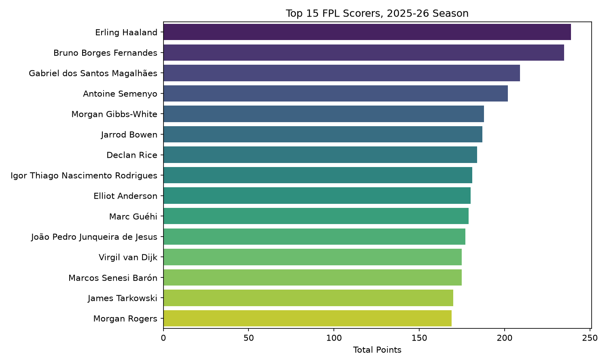
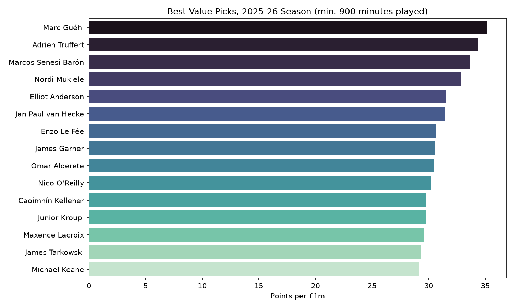
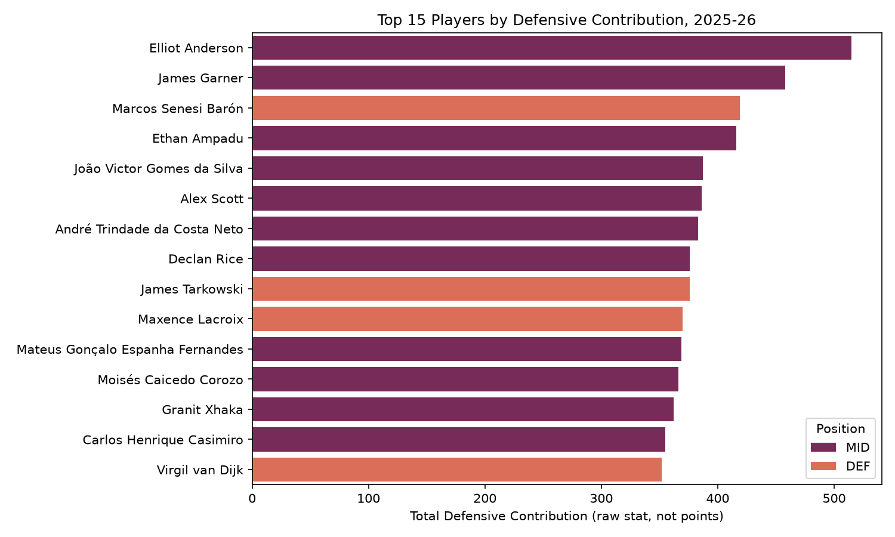
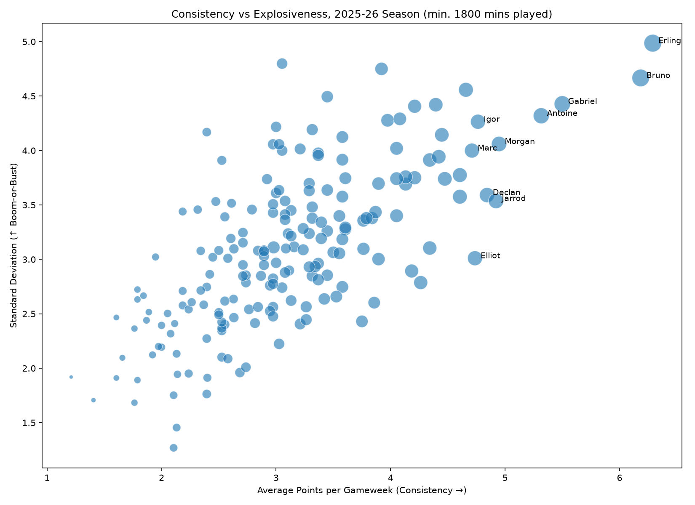

Four players broke 200 points. That has never happened in a single FPL season. Haaland and Fernandes were in a universe of their own.



Every FPL manager has these moments. The player you sold who immediately hauled. The captain who blanked. The bench that outscored your starting eleven. This is all of it, quantified.
Ten million managers making decisions every week. Here is how they moved, when they panicked, what they trusted, and whether the collective wisdom of the crowd was actually wise.
The numbers that separate the managers who finished in the top 10k from everyone else. Differentials, efficiency, expected goals, player clusters. This is where rank was actually won and lost.
From GW1 to GW38, every point, every blank, every double, every haul. The full 38-chapter story of the 2025-26 Premier League fantasy season.

Back in the Premier League after years away. Some of their players were budget gold. Others were owned by practically nobody. The data tells the full story of their debut season.